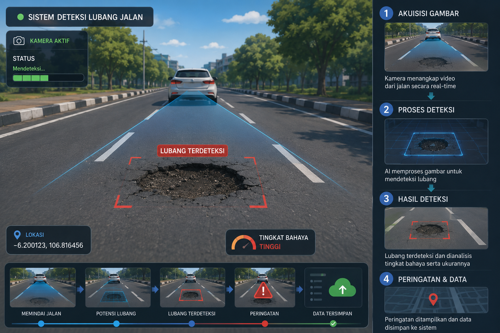

Connected
Deteksi kerusakan jalan secara otomatis menggunakan YOLOv8 dan GPS Tracking berbasis Artificial Intelligence.
Sistem mampu mendeteksi tingkat kerusakan jalan, menyimpan data lokasi, dan menampilkan hasil monitoring pada dashboard.

Identifikasi kerusakan jalan menggunakan YOLOv8.
Menampilkan lokasi kerusakan berdasarkan GPS.
Rekap dan analisis kondisi jalan.
Masyarakat dapat mengirim laporan.
Input Data
YOLOv8
Analisis
Database